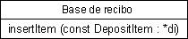
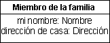
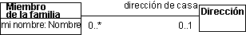
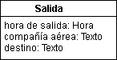
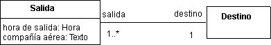
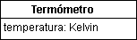

| Directriz: Clase de diseño |
 |
|
| Elementos relacionados |
|---|
DefiniciónUna clase de diseño representa una abstracción de una o varias clases en la implementación del sistema; exactamente, a qué corresponde depende del lenguaje de implementación. Por ejemplo, en un lenguaje orientado a objetos como C++, una clase puede corresponder a una clase plana. O en Ada, una clase puede corresponder a un tipo etiquetado definido en la parte visible del paquete. Las clases definen objetos, que a su vez realizan (implementan) los guiones de uso. Una clase se origina a partir de los requisitos que las ejecuciones de guiones de uso hacen en los objetos necesarios en el sistema, así como cualquier modelo de objeto desarrollado anteriormente. Si una clase es buena o no depende esencialmente del entorno de implementación. El tamaño adecuado de la clase y sus objetos depende del lenguaje de programación, por ejemplo. Lo que se considera correcta al utilizar Ada puede ser incorrecto cuando utilice Smalltalk. Las clases deben correlacionarse con un fenómeno concreto en el lenguaje de implementación, y las clases deben estructurarse para que la correlación resulte en un código correcto. Aunque las peculiaridades del lenguaje de implementación afectan al modelo de diseño, debe mantener la estructura de clase fácil de comprender y de modificar. Debe diseñar como como si tuviera clases y encapsulación, incluso si el lenguaje de implementación no lo soporta. OperacionesEl único modo de que los otros objetos puedan acceder o afectar a los atributos o relaciones de un objeto es a través de sus operaciones. Las operaciones de un objeto se definen a través de su clase. Un comportamiento específico se puede llevar a cabo a través de las operaciones, que pueden afectar a los atributos y relaciones que el objeto mantiene y que provoca que se efectúen otras operaciones. Una operación corresponde a una función miembro en C++ o a una función o procedimiento en Ada. El comportamiento que asigne a un objeto depende del rol que tiene en las ejecuciones de guión de uso. ParámetrosEn la especificación de una operación, los parámetros constituyen parámetros formales. Cada parámetro tiene un nombre y un tipo. Puede utilizar la sintaxis y la semántica del lenguaje de implementación para especificar las operaciones y sus parámetros para que ya estén especificados en el lenguaje de implementación cuando empiece la codificación. Ejemplo: En el sistema de máquina de reciclaje, los objetos de una clase Base de recibo mantienen el seguimiento de cuántos elementos de depósito de un cierto tipo ha entregado un cliente. El comportamiento de un objeto de Base de recibo incluye el incremento del número de objetos devueltos. La operación insertItem, que recibe una referencia del elemento manejado, cumple el objetivo.  Utilice la sintaxis y la semántica del lenguaje de implementación cuando especifique operaciones. Operaciones de claseUna operación casi siempre denota el comportamiento de un objeto. Una operación también puede denotar el comportamiento de una clase, en cuyo caso es una operación de clase. Se puede modelar en el UML definiendo el ámbito de la operación. Visibilidad de la operaciónLas visibilidades siguientes son posibles en una operación:
La visibilidad pública debe utilizarse con moderación, sólo cuando es necesaria una operación por parte de otra clase. La visibilidad protegida debe ser el valor por omisión; protege las operaciones del uso de clases externas, lo que promueve el acoplamiento y la encapsulación libres del comportamiento. La visibilidad privada debe utilizarse en los casos en que desee evitar que las subclases hereden la operación. Esto proporciona un modo de desacoplar las subclases de las superclases y de reducir la necesidad de eliminar o excluir las operaciones heredadas no utilizadas. La visibilidad de implementación es la más restrictiva; se utiliza en los casos en que sólo la propia clase puede utilizar la operación. Es una variante de la visibilidad Privada, que es adecuada para la mayoría de los casos. EstadosUn objeto puede reaccionar diferentemente a un mensaje específico dependiendo del estado en que se encuentre; el comportamiento dependiente del estado de un objeto se define con un diagrama de gráfico de estados asociado. Para cada estado que el objeto puede entrar, el diagrama de gráfico de estados describe qué mensajes puede recibir, qué operaciones se desarrollarán y en qué estado estará el objeto a continuación. Consulte el apartado Técnica: Diagrama de gráfico de estados para obtener más información. ColaboracionesUna colaboración es un conjunto dinámico de interacciones de objetos en que un conjunto de objetos se comunica enviando mensajes entre si. Enviar un mensaje es directo en Smalltalk; en Ada, se realiza como llamada de subprograma. Un mensaje se envía a un objeto receptor que invoca una operación dentro del objeto. El mensaje indica el nombre de la operación a efectuar, junto con los parámetros requeridos. Cuando se envían mensajes, los parámetros reales (valores para los parámetros formales) se proporcionan para todos los parámetros. La transmisión de mensajes entre objetos en una ejecución de guión de uso y el foco de control que los objetos siguen a medida que se invocan las operaciones, se describen en los diagramas de interacción. Consulte los apartados Técnica: Diagrama de secuencias y Técnica: Diagrama de comunicación para obtener información sobre estos diagramas. Un atributo es una propiedad denominada de un objeto. El nombre de atributo que describe el rol del atributo en relación con el objeto. Un atributo puede tener un valor inicial cuando el objeto se crea. Debe modelar los atributos sólo si al hacer el objeto resulta más comprensible. Debe modelar la propiedad de un objeto como un atributo sólo si es una propiedad de ese objeto exclusivamente. Si no, debe modelar la propiedad con una relación de asociación o agregación a una clase cuyos objetos representan la propiedad. Ejemplo:  Un ejemplo de cómo se modela un atributo. Cada miembro de una familia tiene un nombre y una dirección. Aquí, hemos identificado los atributos mi nombre y dirección de cada del tipo Nombre y Dirección, respectivamente:  En este ejemplo, se utiliza una asociación en lugar de un atributo. La propiedad mi nombre es probablemente exclusiva de cada miembro de una familia. Por lo tanto, podemos modelarla como atributo del tipo de atributo Nombre. Una dirección, no obstante, es compartida por todos los miembros de la familia, para que se pueda modelar mejor la asociación entre la clase Miembro de la familia y la clase Dirección. No siempre es fácil decidir inmediatamente si modelar algún concepto como objeto separado o como un atributo de otro objeto. Tener objetos innecesarios en el modelo de objeto genera documentación innecesaria y sobrecarga en el desarrollo. Por lo tanto, debe establecer ciertos criterios para determinar la importancia de un concepto para el sistema.
Probablemente modelará un concepto de forma diferente para diferentes sistemas. En un sistema, el concepto puede ser tan vital que lo modelará como objeto. En otro, puede ser de menor importancia, y lo modelará como atributo de un objeto. Ejemplo: Por ejemplo, para unas líneas aéreas desarrollará un sistema que dé soporte a las salidas.  Un sistema que da soporte a las salidas. Imagine que el personal del aeropuerto desea un sistema que dé soporte a las salidas. Para cada salida, debe definir la hora de salida, la compañía, y el destino. Puede modelar esto como objeto de una clase Salida, con los atributos hora de salida, compañía y destino. Si, en cambio, el sistema se desarrolla para una agencia de viajes, la situación será algo distinta.  Los destinos de los vuelos forman su propio objeto, Destino. La hora de salida, la compañía y el destino serán siendo necesarios. Sin embargo, existen otros requisitos, porque la agencia de viajes está interesada en encontrar una salida con un destino concreto. Por lo tanto, debe crear un objeto separado para Destino. Los objetos de Salida y Destino deben conocerse entre si, lo que se habilita con una asociación entre sus clases. El argumento de la importancia de ciertos conceptos también es válido para determinar qué atributos deben definirse en una clase. La clase Coche sin duda definirá diferentes atributos si sus objetos forman parte de un sistema de registro de vehículos de motor, o bien si los objetos forman parte de un sistema de fabricación de automóviles. Finalmente, las normas sobre qué representar como objetos y qué representar como atributos no son absolutas. Teóricamente, puede modelarlo todo como objetos, pero esto es muy difícil. Como norma general, un objeto se ve como algo que en algún momento se utiliza independientemente de los otros objetos. Además, no tiene que modelar todas las propiedades de objeto mediante un atributo, sólo las propiedades necesarias para comprender el objeto. No debe modelar los detalles del modelo que sean específicos de la implementación, ya que los manejará mejor el implementador. Atributos de claseUn atributo casi siempre denota las propiedades de un objeto. Un atributo también puede denotar las propiedades de una clase, en cuyo caso es un atributo de clase. Se puede modelar en el UML definiendo el ámbito del atributo. Un objeto puede encapsular algo cuyo valor puede cambiar sin que el objeto efectúe ningún comportamiento. Puede ser algo que sea realmente realmente una unidad externa, pero que no se ha modelado como actor. Por ejemplo, los límites del sistema pueden escogerse para que contengan alguna forma de equipamiento sensor. El sensor se puede encapsular en un objeto, para que el valor que mide constituya un atributo. Este valor puede cambiar continuamente, o a ciertos intervalos, sin que el objeto se vea afectado por ningún otro objeto en el sistema. Ejemplo: Puede modelar un termómetro como un objeto; el objeto tiene un atributo que representa temperatura, y los valores de cambio en respuesta a los cambios en la temperatura del entorno. Otros objetos pueden solicitar la temperatura actual efectuando una operación en el objeto de termómetro.  El valor del atributo temperatura cambia espontáneamente en el objeto Termómetro. Todavía puede modelar un valor encapsulado que cambia a su manera como atributo ordinario, pero debe describir en la clase del objeto al que cambia espontáneamente. Visibilidad del atributoLa visibilidad del atributo asume uno de los valores siguientes:
La visibilidad pública debe utilizarse con moderación, sólo cuando un atributo es directamente accesible por parte de otra clase. La definición de la visibilidad pública es efectivamente una notación abreviada para definir la visibilidad del atributo como protegido, privado o de implementación, con operaciones públicas asociadas para obtener y establecer el valor del atributo. La visibilidad del atributo público se puede utilizar como una declaración a un generador de código que estas operaciones obtener/establecer deben generar automáticamente, ahorrando tiempo durante la definición de la clase. La visibilidad protegida debe ser el valor por omisión; protege al atributo del uso de clases externas, lo que promueve el acoplamiento y la encapsulación libres del comportamiento. La visibilidad privada debe utilizarse en los casos en que desee evitar que las subclases hereden el atributo. Esto proporciona un modo de desacoplar las subclases de las superclases y de reducir la necesidad de eliminar o excluir los atributos heredados no utilizados. La visibilidad de implementación es la más restrictiva; se utiliza en los casos en que sólo la propia clase puede utilizar el atributo. Es una variante de la visibilidad Privada, que es adecuada para la mayoría de los casos. Estructura internaAlgunas clases pueden representar abstracciones complejas y pueden tener una estructura compleja. Cuando se modela una clase, el diseñador puede desear representar los elementos de participación interna y sus relaciones, para asegurarse de que el implementador implementa las colaboraciones que se producen dentro de la clase como corresponde. En UML 2.0, las clases se definen como clases estructuradas, con la posibilidad de tener una estructura interna y puertos. Las clases se pueden descomponer en recopilaciones de componentes conectados que se pueden a descomponer, a su vez. Una clase se puede encapsular forzando las comunicaciones desde el exterior para pasar a través de los puertos que obedecen a las interfaces declaradas. Por lo tanto, además de utilizar los diagramas de clase para representar relaciones de clase (por ej., asociaciones, composiciones y agregaciones) y atributos, es posible que el diseñador desee utilizar un diagrama de estructura compuesta. En este diagrama se proporciona al diseñador un mecanismo para mostrar cómo las instancias de los componentes internos desarrollan sus roles en una instancia de una clave determinada. Para obtener más información sobre este tema y ejemplos de diagramas de estructura compuesta, consulte Concepto: Clase estructurada. |
© Copyright IBM Corp. 1987, 2006. Reservados todos los derechos. |